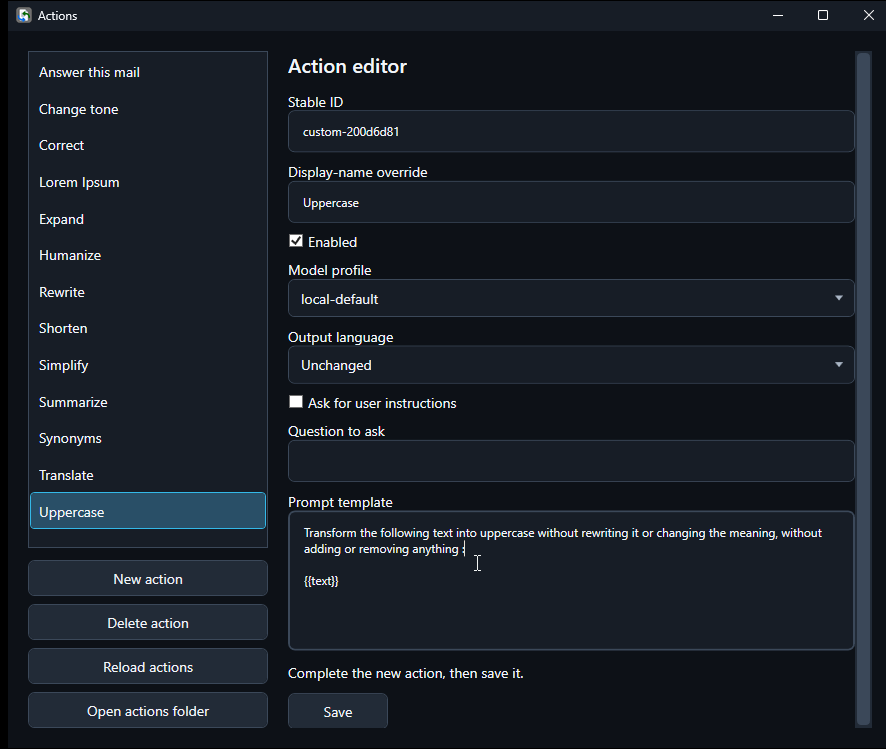

Actions and presets
An action tells TextAid what to do. A preset is one of the four quick buttons that runs an assigned action.
Actions supplied with TextAid
The initial action set covers common text tasks. Action names can also be given personal display-name overrides.
| Action | Use it for |
|---|---|
| Translate | Render the text in another language. |
| Correct | Fix spelling and grammar while preserving meaning. |
| Rewrite | Rephrase a passage. |
| Shorten | Make text more concise. |
| Expand | Develop a short passage. |
| Simplify | Make complex text easier to read. |
| Change tone | Adjust how a message sounds. |
| Summarize | Extract the main points. |
| Answer this mail | Draft a reply to an email. |
| Synonyms | Suggest alternative words. |
| Humanize | Make wording sound more natural. |
The default preset assignments are Correct, Rewrite, Summarize, and Translate. To change one, click the gear beside that preset in the main window and choose another action. The screenshots in this guide show a user's customized preset assignments.
Create or edit an action
- Open the application menu (☰) and choose Actions.
- Select an existing action, or choose New action.
- Set a display name, model profile, and output language. Enable Ask for user instructions and fill in Question to ask if the action should ask a question when run.
- Write the Prompt template. Use
{{text}}where the selected or typed text should go, and{{answer}}where the answer to the question should go. Choose Save.
Placeholders use two opening and two closing braces. TextAid inserts the answer at {{answer}} when the action runs.

Rewrite the following text as one clear sentence. Keep its meaning: {{text}}. Choose the model profile you want that action to use. To ask about tone, enter What tone should I use? in Question to ask and add Use this tone: {{answer}}. to the prompt.Use Enabled to control whether an editable action is available. Delete action removes a selected action after confirmation; Reload actions refreshes the list from saved action files. Open actions folder is available for users who want to inspect those files directly. The system-owned Translate action cannot be deleted.
Choose a connection per action
Each action selects a model profile. The built-in profiles correspond to local-default, network-default, and external-default. Configure the underlying connections in Settings, then select the appropriate profile in the action editor. TextAid does not silently switch an action to a different provider.